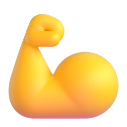

enabled
سیستم طراحی FitOS: آبی پرانرژی
قاب آبی برقی و پرانرژی، کارتهای سفید روی زمینه آبیخاکستری روشن، نارنجی گرم برای کارهای انجامشده و رکوردها، و یک رنگ شاد برای هر بخش. مرجع ساختار: Material 3 اندروید، راستچین و فارسی. همه رنگها و اندازهها توکناند، پس پوسته تیره یا هر تغییر ظاهری فقط از یکجا انجام میشود. «حالت توسعهدهنده» را روشن کنید و روی هر قطعه بزنید تا مشخصاتش را ببینید؛ «کپی پرامپت» آن را برای ساخت در Jetpack Compose آماده میکند.
پایهها (توکنها)
رنگها
یک خانواده تعاملی (آبی برقی) همه دکمهها و انتخابها را میبرد؛ نارنجی پاداش است: روزهای انجامشده و رکوردها. رنگ هر بخش فقط برای داده است و هر رنگ با جفت متنی خودش (--on-*) آمده که کنتراستش با فرمول WCAG حساب شده است. مقادیر زنده از پوسته فعلی خوانده میشوند.
تایپوگرافی
فونت خواندن Vazirmatn برای همه متنها، دکمهها و ناوبری. Changa فقط برای اعداد درشت و آمار (سبک Display). فقط وزنهای ۴۰۰، ۵۰۰ و ۶۰۰؛ حداقل اندازه ۱۲؛ متن فارسی هیچوقت فاصله حرفی نمیگیرد.
فاصلهها
شبکه ۴dp و نقشهای معنایی: فاصله اجزای مرتبط ۸، بین گروهها ۱۶، بین بخشهای اصلی ۳۲، حاشیه صفحه ۱۶. حداقل ناحیه لمس ۴۸.
گوشهها
مقیاس شکل Material با گوشههای سخاوتمند: کارتها ۲۴، کارت قهرمان و برگهها ۳۲، دکمهها ۱۸. فقط چیپهای کوچک و نشانها کاملاً گردند.
ارتفاع
اول خط مو، بعد سایه بسیار نرم با تهرنگ آبی (شفافیت زیر ۰٫۰۸). در پوسته تیره بهجای سایه، سطوح تونال و یک لبه نوری ظریف بالایی.
لایه حالت
حالتهای لمسی با یک لایه همرنگ متن روی قطعه: hover ۸٪، فوکوس ۱۰٪ بههمراه حلقه ۲ پیکسلی با فاصله، فشردن ۱۰٪، کشیدن ۱۶٪.
hover .08
focus .10 + ring
pressed .10
disabled
حرکت
حرکت فقط در پاسخ به کار کاربر: پر شدن وزنه پس از ثبت، باز شدن برگه، تیک خوردن عادت با کمی فنر. با «کاهش حرکت» سیستم، همه آنی میشوند.
آیکونها
آیکونهای رابط خطی و اختصاصیاند (به سبک Material Symbols و Lucide)، با ضخامت توکنی؛ ایموجی هیچوقت جای دکمه یا آیکون ناوبری نمینشیند. آیکونهای جهتدار در راستچین قرینه میشوند.
ایموجی و آدمکها
ایموجیهای سهبعدی Fluent (مایکروسافت، مجوز MIT) نشانه هویت هر بخش و هر عادتاند، روی کاشی رنگی همان بخش. آدمکها اختصاصیاند: نقشه عضلات جلو و پشت، و سه آدمک مسیر بدن با رنگ خنثی.
i-mm-front
i-mm-back
i-body-start
i-body-now
i-body-goal
اقدامها
دکمه
پنج گونه Material: برجسته، پر، تونال، خطی، متنی. در هر صفحه فقط یک دکمه پر (آبی) اقدام اصلی است. اندازه بزرگ ۵۶ برای اقدامهای حین تمرین.
filled
elevated
filled-tonal
outlined
text
hover
focus
pressed
disabled
filled · lg · block
دکمه آیکونی
چهار گونه، ناحیه لمس ۴۸ با چهره ۴۰. حالت دوحالته (انتخابشده/نشده) برای چیزهایی مثل «علاقهمندی».
standard
filled
tonal
outlined
toggle · off
toggle · on
disabled
FAB
دکمه شناور برای مهمترین اقدام صفحه، مثل «ثبت سریع». چهار اندازه.
small
regular
large
extended
extended · tonal
دکمه بخشبندی
تکانتخابی برای نسخه جلسه، چندانتخابی برای فیلتر. بخش انتخابشده تیک میگیرد.
single-select
multi-select
ارتباط
نشان
نقطه برای «چیز تازه»، عدد برای شمارش. فقط روی آیکونها؛ هرگز برای سرزنش.
small · dot
۲
large · number
نشانگر پیشرفت
خطی و دایرهای، معین و نامعین. پیشرفت اهداف روزانه با رنگ همان بخش.
پروتئین ۹۶ از ۱۸۰ گرم
linear · determinate
در حال ساخت پشتیبان…
linear · indeterminate
circular · determinate
circular · indeterminate
اسنکبار
تأیید کوتاه پس از ثبت، با امکان برگرداندن. پیام روشن و بدون عذرخواهی.
with action
without action
راهنمای کوتاه
ساده برای برچسب آیکون؛ غنی برای توضیح یک مفهوم مثل «در ذخیره».
جایگزینی حرکت
plain
تکرار در ذخیره (RIR)چند تکرار دیگر میتوانستی با فرم درست بزنی. اختیاری است و به پیشنهاد وزنه جلسه بعد کمک میکند.
rich
ظرفها
کارت
برجسته برای محتوای اصلی، پر برای گروهبندی آرام، خطی برای فهرستهای قابل انتخاب. کارت سرمهای برای تأکید ویژه.
 کالری
کالری۱٬۳۴۰
از ۲٬۵۰۰ کیلوکالری
برنامه غذایی امروز
۴ وعده، ۲٬۴۸۰ کیلوکالری
بالاتنه، تأکید پشت
۶ حرکت، حدود ۶۰ دقیقه

کار بعدی، حوالی ظهر
سرشانه و سینه
کاروسل
برای مرور افقی؛ مثلاً عکسهای پیشرفت یا وعدههای ذخیرهشده. آیتم آخر کوچک میشود تا ادامهدار بودن را نشان دهد. جای عکس، برچسبخورده است.
جای عکس · جلو · ۱ مهر
جای عکس · جلو · ۱۵ مهر
جداکننده
تمامعرض بین بخشها؛ تورفته داخل فهرست.
تمامعرض
تورفته
فهرست
ردیفهای یک، دو و سه خطی با جزء آغازین (کاشی ایموجی، آیکون، آواتار) و پایانی (متن، کلید، شورون). هر ردیف حداقل ۵۶.

رکورد شخصینشر جانب دمبل۱۰ کیلوگرم × ۲۰ تکرار، دو تکرار بیشتر از رکورد قبلی در ۲۱ مهرامروزقفل اپ
برگه پایینی
استاندارد کنار محتوا میماند؛ مُدال با پرده تیره، برای ثبت سریع وزن یا مقدار غذا.
محتوای صفحه
خواب دیشب
۲۳:۴۰ تا ۰۶:۴۵، هفت ساعت و پنج دقیقه
standard
محتوای صفحه
 ثبت وزن
ثبت وزن۱۱۳٫۴
modal
دیالوگ
پایه برای تأیید کارهای برگشتناپذیر؛ تمامصفحه برای فرمهای چندفیلدی.
این ست حذف شود؟
ست ۲ پرس سرشانه (۲۲٫۵ × ۱۱) حذف میشود و رکوردهای این حرکت دوباره محاسبه میشوند.
دور شکم (روی ناف)۱۱۸
سانتیمتردور سینه
سانتیمترناوبری
نوار بالا
وسطچین برای صفحه خانه، کوچک برای صفحات معمولی، متوسط و بزرگ برای صفحات اصلی با عنوان درشت که با اسکرول کوچک میشوند.
کشوی ناوبری
برای مقصدهای کماستفادهتر: گزارشها، پشتیبان، تنظیمات. گونه مُدال با پرده روی صفحه.
زبانهها
اصلی برای بخشهای همسطح یک صفحه (وزن، اندازهها، عکسها)؛ ثانوی برای بازه زمانی. نسخه قابل اسکرول برای تعداد زیاد.
جستوجو
نوار جستوجو برای غذا و حرکت؛ با لمس، نمای کامل با پیشنهادهای اخیر باز میشود.
bar
سینه مرغ گریل
ران مرغ بدون پوست
مرغ (سوپ)
view
انتخاب
چکباکس
برای انتخاب چند مورد (مثلاً موارد پشتیبان). حالت نیمه برای «بعضی انتخاب شده».
unchecked
checked
indeterminate
error
disabled
چیپها
کمکی برای اقدام مرتبط، فیلتر برای عضله یا وعده، ورودی برای تجهیزات انتخابشده، پیشنهادی برای میانبُرهای هوشمند.
assist
filter
دمبل ۲ تا ۲۴ کیلوinput
suggestion
disabled
دکمه رادیویی
یک انتخاب از چند گزینه، مثل واحد وزن.
کلید
برای تنظیمات روشن و خاموش. در راستچین، حالت روشن به سمت چپ میرود.
off
on (icon)
disabled
اسلایدر
پیوسته برای زمان استراحت، گسسته برای «در ذخیره» (۰ تا ۴)، بازهای برای محدوده هدف کالری.
continuous
discrete
range
انتخاب تاریخ (شمسی)
تقویم شمسی با شروع هفته از شنبه. امروز با حلقه، روز انتخابشده پر، و نقطه نارنجی برای روزهایی که تمرین ثبت شده.
انتخاب تاریخ
سهشنبه ۲۸ مهر
مهر ۱۴۰۵
انتخاب ساعت
برای ساعت یادآوریها؛ ۲۴ ساعته با ارقام فارسی.
ساعت یادآوری تمرین
۱۲:۰۰
ورود متن
فیلد متن
پر و خطی، با برچسب شناور، متن کمکی، پیام خطا، آیکون آغازین و پسوند واحد. خطا اول بعد از ترک فیلد نشان داده میشود و میگوید چه باید کرد.
وزن
filled · empty
وزن۱۱۳
کیلوگرمناشتا و بعد از سرویس، دقیقترین زمان است
وزن۱۱۳٫۴
کیلوگرمfilled · filled
کالری در ۱۰۰ گرم۹۸۰۰
عدد بزرگتر از ۹۰۰ ممکن نیست؛ برچسب بسته را دوباره نگاه کن.
نام غذا
outlined · empty
منبعUSDA FoodData Central
disabled
ویژه FitOS (افزونهها)
کاشی ایموجی
هویت هر بخش و هر عادت: ایموجی سهبعدی روی کاشی رنگی همان بخش. گونه شناور (چرخیده با سایه نرم) فقط برای صفحههای خوشآمد و حالتهای خالی.
sm 32
md 44

lg 64
xl 96

float
نقشه عضلات
آدمک جلو و پشت. عضله هدف با نارنجی تمرین و هاشور مشخص میشود؛ عضله کمکی کمرنگتر. اندازه کوچک روی کاشی روز، بزرگ در جزئیات جلسه و حرکت.
سرشانه و سینه · front + back
پشت و بازو · back
پایینتنه · front
small 56
هالتر امروز
امضای بصری اپ: هر هدف امروز یک وزنه است و به اندازه پیشرفتش پر میشود (تمرین، کالری، پروتئین، آب، خواب، عادتها). ثبتنشده خالی میماند و هرگز پر فرض نمیشود.
بار امروز
هر هدف کامل، یک وزنه کامل
۵۱٪
کاشی روز برنامه
شبکه روزهای برنامه: انجامشده نارنجی با تیک سفید، امروز با قاب آبی، روزهای آینده با آدمک عضله هدف و تعداد حرکت، استراحت با خطچین.
۱بالاتنه
۲پایینتنه
۳استراحت
۴سرشانه
۵پشت
کاشی آمار
یک عدد مهم با برچسب، هدف و نوار پیشرفت به رنگ همان بخش. عدد با Changa و ارقام جدولی.
کالری۱٬۳۴۰از ۲٬۵۰۰
۱٬۱۶۰ مانده
پروتئین
۹۶از ۱۸۰ گرم
۸۴ گرم مانده
نمودار وزن
خط روند با سطح کمرنگ و برچسب عدد روی آخرین نقطه. زمان در جهت خواندن فارسی جریان دارد: قدیمیترین در راست، جدیدترین در چپ. داده کم، پیام «داده کافی نیست» میگیرد.
وزننمودار کالری
ستونها خاکستری، ستون امروز به رنگ بخش کالری با عدد برجسته، و خطچین هدف. روزهای آینده فقط برچسب دارند، نه ستون ساختگی.
کالری این هفتهمسیر بدن
شروع، اکنون و هدف با آدمکهای خنثی؛ بدون برچسب «چاق» یا رنگ قرمز. پیشرفت بهصورت درصد مسیر طیشده.
مسیر تا هدف
شروع، ۱ مهر۱۱۵٫۰
اکنون۱۱۳٫۴
هدفزیر ۱۰۰
۱٫۶ کیلوگرم از ۱۵ کیلوگرم، حدود ۱۱٪ مسیر
شمارنده وزنه و تکرار
برای ثبت ست با یک دست حین تمرین: دکمههای بزرگ، عدد درشت، گام وزنه از تنظیمات حرکت.
وزنه، کیلوگرم
۲۲٫۵
تکرار
۱۰
تایمر استراحت
حلقه شمارش معکوس به رنگ آبی آرام، با افزودن ۳۰ ثانیه و رد کردن.
استراحت
۱:۱۴
قرص ست
ستهای یک حرکت در یک ردیف: ثبتشده سبز (لمس برای اصلاح)، فعلی آبی، باقیمانده با هدف تکرار.
ست ۳۱۲–۲۰
ست ۴۱۲–۲۰
ردیف عادت
ایموجی عادت، نام، وضعیت، و دایره تیک سبز. سه حالت: انجامشده، انجامنشده (خطچین)، ثبتنشده. عادت خودکار قابل لمس نیست.
ثبت وزن صبحخودکار از بخش بدنلیوانهای آب
دوازده لیوان ۲۵۰ میلیلیتری تا هدف ۳ لیتر؛ با دکمههای ثبت سریع.
۱٫۵ از ۳ لیتر